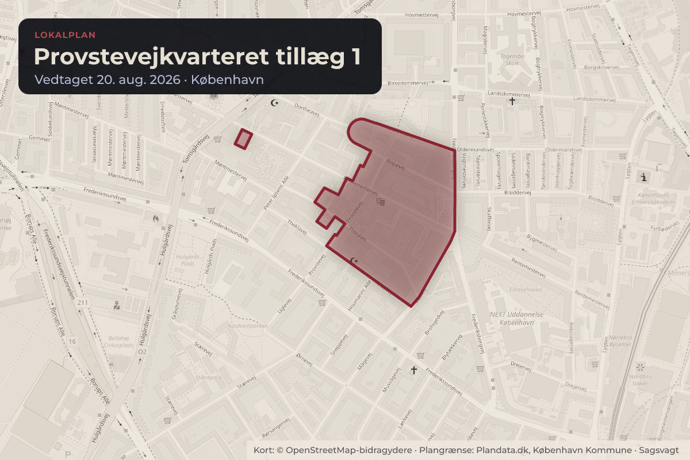
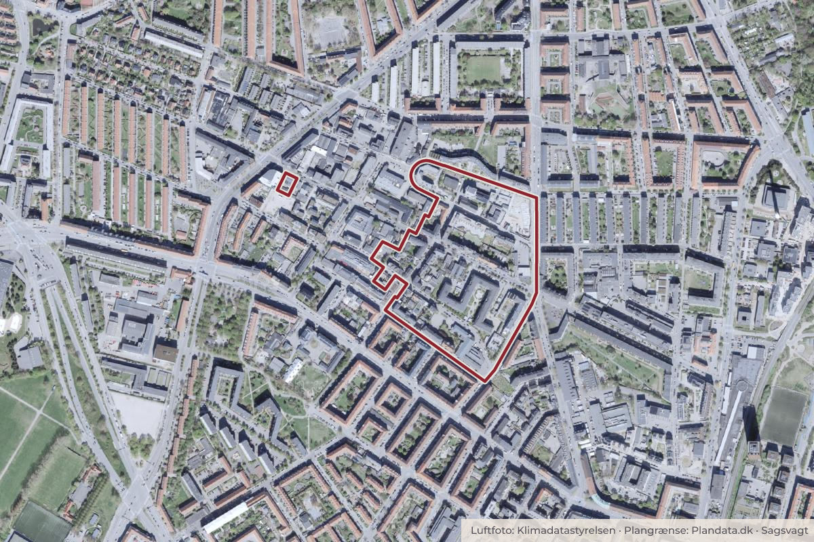

Besluttet 15. juni, Klima-, Miljø- og Teknikudvalget
Endelig vedtagelse af lokalplan Provstevejkvarteret tillæg 1, Bispebjerg

Kort: © OpenStreetMap-bidragydere. Plangrænse: Plandata.dk, København Kommune.

Kort fortalt
- Hvem
- Klima-, Miljø- og TeknikudvalgetGår videre til Økonomiudvalget og Borgerrepræsentationen
- Hvornår
- Mandag 15. juni 2026
- Status
- Besluttet. Indstillingen blev anbefalet over for Økonomiudvalget og Borgerrepræsentationen uden afstemning.Beslutningen er forkortet her. Læs hele beslutningen
- Næste skridt
- Når Borgerrepræsentationen har vedtaget lokalplanen, bekendtgør Klima-, Miljø- og Teknikforvaltningen denne i henhold til reglerne i planloven.
Er noget forkert her? Skriv til os
Sagens vej
- 15. juniKlima-, Miljø- og TeknikudvalgetAnbefalet
- 11. augustØkonomiudvalgetBesluttet
- 20. augustBorgerrepræsentationenGodkendt
Læs hele sagen Kommunens egen tekst
Indstilling
Klima-,
Miljø- og Teknikforvaltningen indstiller, at Klima-, Miljø- og Teknikudvalget
over for Økonomiudvalget og Borgerrepræsentationen anbefaler,
• at
godkende lokalplan tillæg 1 til lokalplan Provstevejkvarteret (bilag 2)
med ændringer som foreslået i afsnittet Løsning.
Problemstilling
Grundejerne af ejendommen beliggende på Rentemestervej 19A
(Rentemestergården) i Bispebjerg ønsker at muliggøre udnyttelse af tagetager i
eksisterende bebyggelse. Forvaltningen modtog anmodning om opstart af
lokalplansproces den 14. januar 2025. Kommuneplan 2024 har en generel
bestemmelse for særlige bebyggelsesforhold, som muliggør, at for eksisterende
bebyggelse kan bestemmelserne om maksimal bebyggelsesprocent, boligandel og
friarealprocent fraviges ved nyindretning og udvidelse af bebyggelsens tagetage.
Den gældende lokalplan Provstevejkvarteret forhindrer
dette, hvis boligandelen dermed bliver større
end 75% på den enkelte ejendom. Der er derfor behov for et
tillæg til lokalplanen, hvis udnyttelse af tagetagen skal muliggøres.
Borgerrepræsentationen vedtog en bevarende lokalplan for området
den 22. september 2022. Bevaringsværdien påvirkes ikke af denne lokalplan og
handler alene om udnyttelse af tagetager i eksisterende byggerier.
Borgerrepræsentationen delegerede den 19. juni 2025 kompetencen
til at sende forslag til enkle lokalplaner (kategori 1) og ukomplekse
lokalplaner (kategori 2) i offentlig høring til Klima-, Miljø- og
Teknikforvaltningen. Forslaget til lokalplanen har derfor ikke tidligere været
politisk behandlet.
Løsning
Planforslaget ligger i bydelen Bispebjerg og hører under
område V i lokalplan Provstevejkvarteret.
Lokalplansforslaget vil betyde, at det bliver muligt at udnytte
tagetager, fx gamle loftsrum og tørrelofter til beboelse. Lokalplanen vil både
muliggøre, at der etableres nye boligenheder, og at eksisterende lejligheder
kan udvide deres bolig ved inddragelse af tagetagen. Der stilles ikke krav om
etablering af elevator ved etablering af nye boligenheder.
Området er hovedsageligt præget af små boliger, som ligger i
enten karré- eller stokbebyggelse i op til fem etager.
Forvaltningen foreslår at imødekomme grundejeres ønske om at
fravige boligandelen på 75% i den gældende lokalplan Provstevejkvarteret, idet
der generelt er et behov for flere boliger og særligt flere større boliger i
området.
Anvendelsen kan ikke rummes inden for den eksisterende lokalplan,
og det er derfor nødvendigt at udarbejde et tillæg til lokalplanen. Alle øvrige
planmæssige forhold vil fortsat være reguleret i den gældende lokalplan
Provstevejkvarteret.
Parkering
Der stilles ikke krav om yderligere parkeringspladser i
planforslaget, da der er tale om en anvendelsesændring. Tillægget muliggør ikke
nybyggeri i lokalplanens område, men muliggør alene udnyttelse af tagetager i
eksisterende bebyggelse.
Hvis der gives byggetilladelse til udnyttelse af tagetager, og
der derved kan opstå behov for flere parkeringspladser, vil dette blive
behandlet i byggesagen.
Høring
Lokalplanforslaget
har været i offentlig høring fra den 23. januar 2026 til den 27. februar 2026,
og forvaltningen har modtaget tre henvendelser, som er vedlagt som
bilag 3. I bilag 4 er henvendelserne refereret med forvaltningens
bemærkninger. Hovedsynspunkterne i høringen er anført nedenfor.
Bispebjerg
Lokaludvalg har følgende hovedsynspunkter:
(bilag 3,
henvendelse nr. 3)
• Der
udtrykkes tilfredshed med, at lokalplanen muliggør lejligheder, da
kvarteret er præget af små lejligheder.
• Der
gøres opmærksom på, at den øgede boligandel vil kunne medføre øget pres på
kvarterets erhverv og byliv.
• Der
gøres opmærksom på, at den øgede boligandel vil kunne medføre øget pres på
trafikken samt parkering, affald og fællesarealer.
• Der
gøres opmærksom på, at bygningernes ydre fremtræden bør bevares, så
eventuelle kviste, karnapper eller lignende holdes i en byggestil, der
ikke markant afviger fra resten af bygningen.
Forvaltningens
bemærkninger
Lokaludvalgets synspunkter er sammenfaldende med borgeres og
Provstevej Vejlaug’s henvendelser, og forvaltningen kommenterer derfor samlet
nedenfor:
• Forvaltningen
ser det også som positivt, at der sker en øget variation af boligtyper og
boligstørrelser i området. Det vil potentielt kunne bidrage til, at flere
børnefamilier har bedre mulighed for at blive boende i bydelen.
• Forvaltningen
bemærker, at det fortsat er vigtigt at sikre plads til lokale erhverv og
servicefunktioner i området. Lokalplantillægget muliggør alene, at
eksisterende tagetager, der ikke allerede er udnyttede til boliger, kan
indrettes til boliger. Lokalplantillægget påvirker derfor ikke de øvrige
etager i bebyggelsen. Boligandelen kan kun øges, når det sker i
forbindelse med, at de udnyttede etageareal i bebyggelsen øges.
Lokalplantillægget vil ikke ændre mulighed for erhverv og værksteder i
området.
• Forvaltningen
er enig i, at flere boliger kan medføre et øget behov for parkering,
affaldshåndtering mv. Der vil også kunne blive mere trafik, men dog i
mindre grad. Disse problematikker vil alle blive behandlet i en eventuel
byggesag. Efter en konkret vurdering kan der gives byggetilladelse til
udnyttelse af tagetagen, hvis forhold omkring fx parkering og affald lever
op til den gældende kommuneplan og andre gældende plangrundlag for
området.
• Lokalplantillægget
muliggør ikke, at der kan bygges yderligere etager på de eksisterende
bygninger. Den ydre fremtræden af bygninger beliggende i
lokalplantillæggets område er reguleret i den gældende lokalplan
Provstevejkvarteret. Eventuelle ændringer i bygningernes ydre fremtræden
vil skulle passe ind i de omkringliggende omgivelser og vil skulle
godkendes i en byggesag. Forvaltningen gør opmærksom på, at flere at
bygningerne i lokalplantillæggets område er bevaringsværdige, hvilket
stiller yderligere krav til ændringer i bygningernes ydre fremtræden.
Politisk
handlerum
Det politiske handlerum er begrænset, da lokalplansforslaget
alene handler om fravigelse af krav om boligandel for at kunne udnytte
tagetager til beboelse i eksisterende bygninger.
Hvis indstillingen ikke godkendes, vil området været omfattet af
lokalplan Provstevejkvarteret. Det vil efter denne lokalplan ikke være muligt
at fravige bestemmelser om maksimal bebyggelsesprocent, boligandel og friareal
med henblik på nyindretning og udvidelse af eksisterende tagetager. Hvis
indstillingen godkendes, vil området ligeledes fortsat være omfattet af
lokalplan Provstevejkvarteret.
Økonomi
Denne
indstilling har ikke i sig selv økonomiske konsekvenser for Københavns Kommune.
Videre proces
Når
Borgerrepræsentationen har vedtaget lokalplanen, bekendtgør Klima-, Miljø- og
Teknikforvaltningen denne i henhold til reglerne i planloven.
Beslutning
Indstillingen blev anbefalet over for Økonomiudvalget og Borgerrepræsentationen uden afstemning.
Det samlede udvalg afgav følgende protokolbemærkning:
”Partierne stemmer for, da vi mener, det er vigtigt med fleksible muligheder for at udnytte tagarealer, til at skabe flere boliger. Vi ønsker generelt at gøre det nemmere, at omdanne tagarealer til boliger.”
Bilag
- Bilag 1 Overblik over politisk behandling
- Bilag 2 Forslag til lokalplan Provstevejkvarteret tillæg 1
- Bilag 3 Henvendelser modtaget i høringsperioden
- Bilag 4 Svar på henvendelser i høringsperioden
- Svar på spørgsmål fra Karoline Lindgaard om krav om nye boliger
Kilde: Københavns Kommune, Klima-, Miljø- og Teknikudvalget, referat fra mødet mandag 15. juni 2026, punkt 13. Læs den originale sag hos kommunen.